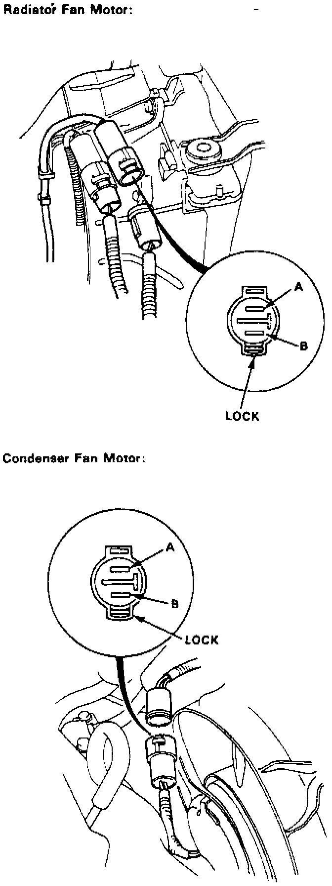

Symptom Related Diagnostic Procedures
1. Disconnect fan motor connector.Fig. 17 Fan Motor Connector Terminal Identification:

2. Apply battery voltage to connector terminal A and ground to terminal B, Fig. 17.
3. If fan motor does not run, replace motor.